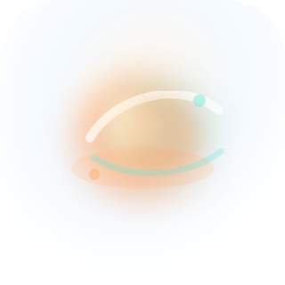
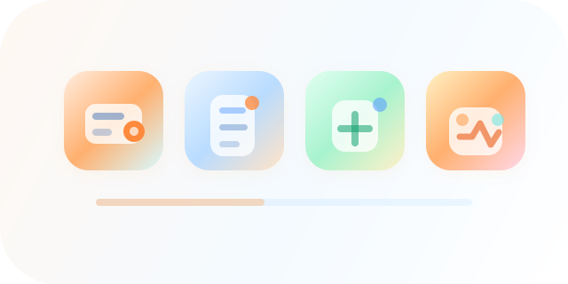

D01 v02 小T / 助手方向
用于封面、角色选择、首页提示和空状态。本版减少复杂外圈和装饰点，保留轻量、干净、可亲近的助手感。
- 重点看：是否比 v01 更简洁、更细致、不凌乱。
- 通过：友好但不幼稚，橙色关系明确。
- 不通过：仍像通用机器人、玩具或细节过多。
assets-review/d01-assistant-direction-v02.svg
本版根据 v01 人工反馈调整：降低小T复杂度，D02 改成弥散氛围光影，D03 重画对齐图标，D04 改为更明确的支付/收款业务表达。当前仍只评审方向，不进入完整图库生产。
用于封面、角色选择、首页提示和空状态。本版减少复杂外圈和装饰点，保留轻量、干净、可亲近的助手感。

用于数据分析、设置、系统健康和 AI 洞察。本版不做实体球，以橙色弥散圆形/异形光影建立智能氛围。

用于应用中心、设置入口和数据模块。本版重新对齐线条和图形，避免错位变形，图标底色仍可按模块语义变化。
用于支付设置、充值、收款说明等页面。本版保留接近的风格，但业务对象改为 POS 终端、支付卡和到账圆点。